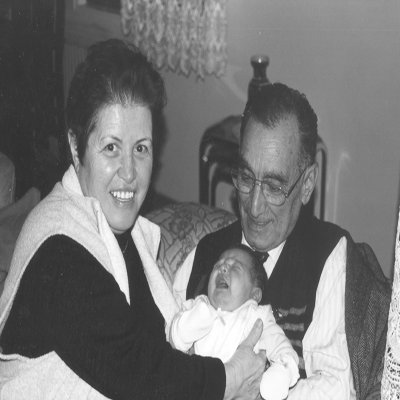
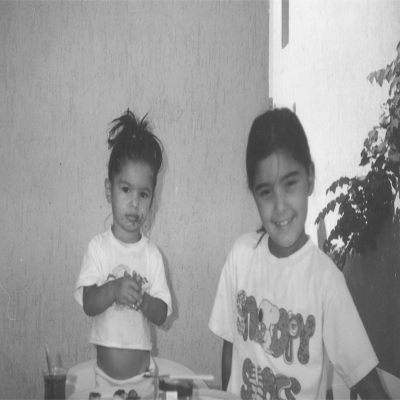

1989’da babamın kalbinde mitral kapağı yetmezliği tespit edildi. GATA’da kalp ameliyatına girmesi gerekti. Bir öğretmen vardı (bu da bir paket sigarayla bir kutu baklavaya tez onaylardı). Ona durumu anlatıp iki gün izin istedim “Veremem” dedi. “Ben gidiyorum o zaman Komutanım” diye karşılık verdim. İzin kâğıdım arkamdan yetişti.
Annemle GATA’nın bugünkü acilinin girişinde bekliyoruz. Ameliyatı Kemal Beyazıt yapıyor. Bir hasta indi, beni sordu. Biz, o ana kadar metiniz, baban arabayı sana bırakıyor, vasiyeti böyle, dedi. Biz koptuk tabii, moral sıfır. Babam, Allah’a şükür sağ salim kurtuldu; ama bugüne dek kalbine hep bir şeyler yaptılar, anjiyo manjiyo.
Her seferinde doktora “Doktor Bey kalbimi açınca bakın Gülten yazıyor mu?” der. Annemi hem güldürür hem ağlatır. En son yattığında doksan beş gün başından ayrılmadı annem. Şimdi nasıl çatır çatır boşanıyor çiftler farkında mısınız, herkes “yeni maceralar, Angelina Jolieler, Brad Pittler” arıyor. Gizli gizli dünya seks ortalamalarını okuyorlar, altında mıyım üstünde miyim diye. Herkes diğerinin araba modelinin altında kalıyor. Benim, annemle babamın ilişkisinde fark ettiğim şu: Gençlikteki zorluklar insanı sağlam yapıyor; beraber çekilen zorluklar evliliği sağlam yapıyor.
Cebindeki para değil, yüreğindeki sevgi çiftlere mutluluk getiren. Hiçbir kitabımda ahlak üzerine ahkâm kesmedim; şöyle yapın, böyle yapmayın veya aldatın, aldatmayın demedim. O benim işim değil, seni ilgilendirir. Hayatın senindir, dilediğin gibi yaşarsın. Sonucuna da katlanırsın. Benim, annemle babamda gördüğüm sonuç: Ölene dek birbirlerine omuz omuza destek olacaklar.
Ameliyat sonrası bir gün Karşıyaka Reşadiye’deki evimizde, üç katlı ranzamızın olduğu ufacık odada, beşimiz yerde sohbet ediyoruz. Babam yorganı göstererek “Makas biraz eskimiş” dedi. Sonra mutfakta bıçağa “Bu tavuk pek kesmiyor” deyince gülüştük. Akşam Atatürk’ten konuşurken “Ne demiş Atatürk: ‘Türküm, doğruyum, cinsim’ ” deyince ertesi gün doktora gittik ve kullandığı ilaçlar nedeniyle babamın beynindeki konuşma merkezine bir pıhtı gittiğini öğrendik. Sonrasında konuşması çok yavaşladı. Eskiden herkesin ağzının içine baktığı baba pek bir dinler oldu.

İzmir (Kasım 2000)
Sanem’in oğlu Erim yeni doğmuş. Anneannesi ve dedesi seviyorlar. Erim dört yaşında, bir gün gezmeye çıkarmışlar, güneş altında biraz durmuş ve konuşmuş “Oh, yaşlı kemiklerim ısındı.”

Naz ve Nazlı. Bengül’ün kızları, babamın torunları. Nazlı yirmi yaş civarında, işletme okuyor. Bence geleceğin çok iyi bir yazarı. Tek dezavantajı var, ülkesini çok seviyor. On kitap yazıp, siyasi hiçbir şey söylemeyip, Nobel Edebiyat Ödülü dağıtılmadan bir ay önce “Biz Türkler katiliz, çok Ermeni, Kürt öldürürüz; tehcir sırasındaki tüm rakamların 15 bin olduğuna bakmayın, 2 milyon Ermeni, 60 bin de Kürt öldürdük” derse bir yıl sonraki törene ödülü yetişir.
Naz lisede, gurur duyduğumuz yeğenimiz. İkisinin de badem badem gözleri vardır.
Sonra onu çok üzen bir şey oldu. Pek okuyamamaya başladı. Ardından böbreklerde bir problem, diyaliz makinesi, gözler falan... Şimdi bir yerlere gönlünce gidemiyor; ama vücudu da şaşkın, bu ne canavar bir adam diye. Başkası olsa yığılır kalırdı. Onun ruhu vücudunu da peşinden sürüklüyor.
Aslan Babam.
Diyalizden çıkmış bir gün, muhabbet açılsın diye “Nasıl geçti baba?” dedim. “Harika geçti yavrum” dedi...
Anladınız değil mi beni?
Geçenlerde Lösev’den bir broşür geldi. Ülkede kan kanserine yakalanan çocukların %87’si fakir aile çocukları. Bunların %11’inin hastaneye gitmek için otobüse binecek paraları yok.
Bu ülkenin çocuklarını iyi ve sağlıklı beslememiz lazım. Sadece parfüme harcanan parayla o çocukların sağlığı kurtarılır. İyi koşullarda büyümezlerse ileride sorunlar ortaya çıkıyor.